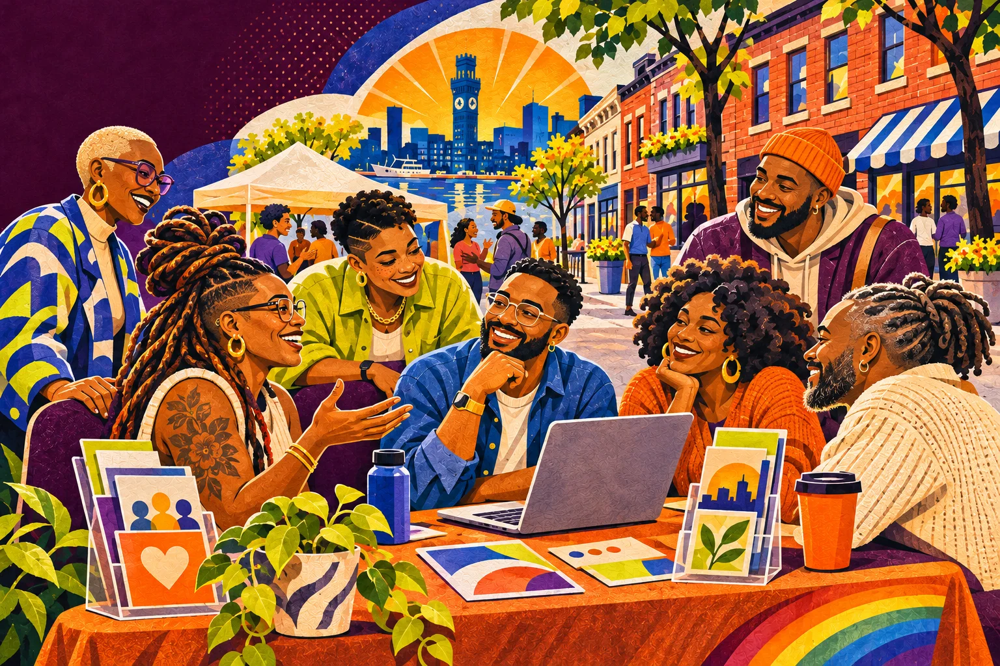

Google Ad Grants
Applied nonprofit advertising knowledge to explore how grant-supported search campaigns can extend an organization’s reach.
A consulting engagement connecting Google Ads and nonprofit digital outreach with LGBTQ+ community visibility.
As a Digital Marketing Consultant with LGBT Detroit, I brought my advertising and nonprofit digital strategy experience to work supporting the organization’s outreach. The focus was on using digital channels to help community-facing information and services reach the people looking for them.
This work connected my Google Ads and Google Ad Grants experience with a commitment to LGBTQ+ community visibility and accessible communication.

Applied nonprofit advertising knowledge to explore how grant-supported search campaigns can extend an organization’s reach.
Considered how campaign messaging and online pathways can make information more discoverable and useful.
This consulting experience sits at the intersection of digital strategy and community impact: translate an organization’s purpose into clear, findable communication, then use campaign tools thoughtfully in support of that mission.